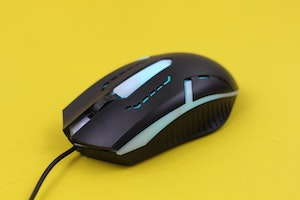

Mouse
A mouse is a small hardware input device used by hand. It controls the movement of the cursor on the computer screen and allows users to move and select folders, text, files, and icons on a computer.
It is an object, which needs to put on a hard-flat surface to use. When the users move the mouse, the cursor moves in the same direction on the display screen. The name mouse is derived from its size as it is a small, corded, and elliptical shape device that looks a bit like a mouse. A connecting wire of a mouse is imaginable to be the mouse's tail.
Additionally, some of the mice have combined features like extra buttons, which may be assigned and programmed with many commands. The mouse invention is considered as one of the most important breakthroughs in the computer field as it helps to reduce the use of a keyboard.